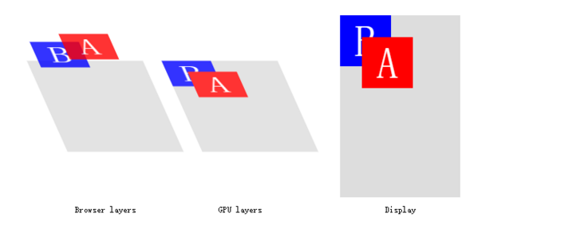
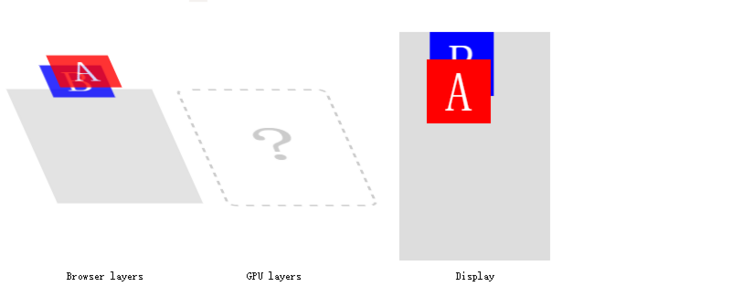
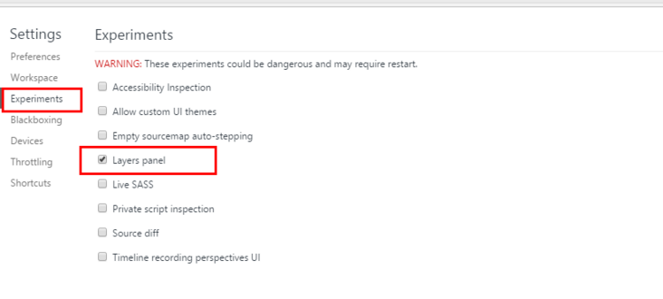
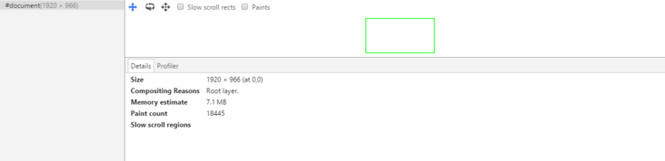
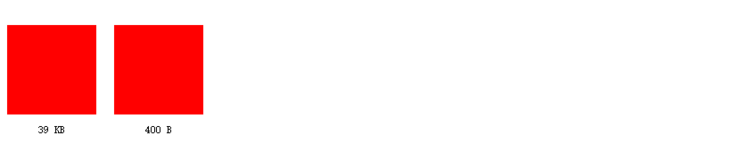

相信不少人在做移动端动画的时候遇到了卡顿的问题，这篇文章尝试从浏览器渲染的角度；一点一点告诉你动画优化的原理及其技巧，作为你工作中优化动画的参考。文末有优化技巧的总结。
相信不少人在做移动端动画的时候遇到了卡顿的问题，这篇文章尝试从浏览器渲染的角度；一点一点告诉你动画优化的原理及其技巧，作为你工作中优化动画的参考。文末有优化技巧的总结。
因为 GPU 合成没有官方规范，每个浏览器的问题和解决方式也不同；所以文章内容仅供参考。
#
浏览器渲染
提高动画的优化不得不提及浏览器是如何渲染一个页面。在从服务器中拿到数据后，浏览器会先做解析三类东西：
-
解析 html,xhtml,svg 这三类文档，形成 dom 树。
-
解析 css，产生 css rule tree。
-
解析 js，js 会通过 api 来操作 dom tree 和 css rule tree。
解析完成之后，浏览器引擎会通过 dom tree 和 css rule tree 来构建 rendering tree：
-
rendering tree 和 dom tree 并不完全相同，例如：
或 display:none 的东西就不会放在渲染树中。 -
css rule tree 主要是完成匹配，并把 css rule 附加给 rendering tree 的每个 element。
在渲染树构建完成后，
-
浏览器会对这些元素进行定位和布局，这一步也叫做 reflow 或者 layout。
-
浏览器绘制这些元素的样式，颜色，背景，大小及边框等，这一步也叫做 repaint。
-
然后浏览器会将各层的信息发送给 GPU，GPU 会将各层合成；显示在屏幕上。
# 渲染优化原理
如上所说，渲染树构建完成后；浏览器要做的步骤：
reflow——》repaint——》composite
# reflow 和 repaint
reflow 和 repaint 都是耗费浏览器性能的操作，这两者尤以 reflow 为甚；因为每次 reflow，浏览器都要重新计算每个元素的形状和位置。
由于 reflow 和 repaint 都是非常消耗性能的，我们的浏览器为此做了一些优化。浏览器会将 reflow 和 repaint 的操作积攒一批，然后做一次 reflow。但是有些时候，你的代码会强制浏览器做多次 reflow。例如：
1 | var content = document.getElementById('content'); |
以上第三行代码，需要浏览器 reflow 后；再获取值，所以会导致浏览器多做一次 reflow。
下面是一些针对 reflow 和 repaint 的最佳实践：
-
不要一条一条地修改 dom 的样式，尽量使用 className 一次修改。
-
将 dom 离线后修改
-
使用 documentFragment 对象在内存里操作 dom。
-
先把 dom 节点 display:none;（会触发一次 reflow）。然后做大量的修改后，再把它显示出来。
-
clone 一个 dom 节点在内存里，修改之后；与在线的节点相替换。
-
-
不要使用 table 布局，一个小改动会造成整个 table 的重新布局。
-
transform 和 opacity 只会引起合成，不会引起布局和重绘。
从上述的最佳实践中你可能发现，动画优化一般都是尽可能地减少 reflow、repaint 的发生。关于哪些属性会引起 reflow、repaint 及
composite，你可以在这个网站找到 https://csstriggers.com/。
# composite
在 reflow 和 repaint 之后，浏览器会将多个复合层传入 GPU；进行合成工作，那么合成是如何工作的呢？
假设我们的页面中有 A 和 B 两个元素，它们有 absolute 和 z-index 属性；浏览器会重绘它们，然后将图像发送给 GPU；然后 GPU 将会把多个图像合成展示在屏幕上。
1 | <style> |

我们将 A 元素使用 left 属性，做一个移动动画：
1 | <style> |
在这个例子中，对于动画的每一帧；浏览器会计算元素的几何形状，渲染新状态的图像；并把它们发送给 GPU。（你没看错，position 也会引起浏览器重排的）尽管浏览器做了优化，在 repaint 时，只会 repaint
部分区域；但是我们的动画仍然不够流畅。
因为重排和重绘发生在动画的每一帧，一个有效避免 reflow 和 repaint 的方式是我们仅仅画两个图像；一个是 a 元素，一个是 b 元素及整个页面；我们将这两张图片发送给
GPU，然后动画发生的时候；只做两张图片相对对方的平移。也就是说，仅仅合成缓存的图片将会很快；这也是 GPU 的优势 —— 它能非常快地以亚像素精度地合成图片，并给动画带来平滑的曲线。
为了仅发生 composite，我们做动画的 css property 必须满足以下三个条件：
-
不影响文档流。
-
不依赖文档流。
-
不会造成重绘。
满足以上以上条件的 css property 只有 transform 和 opacity。你可能以为 position 也满足以上条件，但事实不是这样，举个例子 left 属性可以使用百分比的值，依赖于它的 offset
parent。还有 em、vh 等其他单位也依赖于他们的环境。
我们使用 translate 来代替 left
1 | <style> |
浏览器在动画执行之前就知道动画如何开始和结束，因为浏览器没有看到需要 reflow 和 repaint 的操作；浏览器就会画两张图像作为复合层，并将它们传入 GPU。
这样做有两个优势：
-
动画将会非常流畅
-
动画不在绑定到 CPU，即使 js 执行大量的工作；动画依然流畅。
看起来性能问题好像已经解决了？在下文你会看到 GPU 动画的一些问题。
# GPU 是如何合成图像的
GPU 实际上可以看作一个独立的计算机，它有自己的处理器和存储器及数据处理模型。当浏览器向 GPU 发送消息的时候，就像向一个外部设备发送消息。
你可以把浏览器向 GPU 发送数据的过程，与使用 ajax 向服务器发送消息非常类似。想一下，你用 ajax 向服务器发送数据，服务器是不会直接接受浏览器的存储的信息的。你需要收集页面上的数据，把它们放进一个载体里面（例如
JSON），然后发送数据到远程服务器。
同样的，浏览器向 GPU 发送数据也需要先创建一个载体；只不过 GPU 距离 CPU 很近，不会像远程服务器那样可能几千里那么远。但是对于远程服务器，2 秒的延迟是可以接受的；但是对于 GPU，几毫秒的延迟都会造成动画的卡顿。
浏览器向 GPU 发送的数据载体是什么样？这里给出一个简单的制作载体，并把它们发送到 GPU 的过程。
-
画每个复合层的图像
-
准备图层的数据
-
准备动画的着色器（如果需要）
-
向 GPU 发送数据
所以你可以看到，每次当你添加 transform:translateZ(0) 或 will-change：transform
给一个元素，你都会做同样的工作。重绘是非常消耗性能的，在这里它尤其缓慢。在大多数情况，浏览器不能增量重绘。它不得不重绘先前被复合层覆盖的区域。
# 隐式合成
还记得刚才 a 元素和 b 元素动画的例子吗？现在我们将 b 元素做动画，a 元素静止不动。

和刚才的例子不同，现在 b 元素将拥有一个独立复合层；然后它们将被 GPU 合成。但是因为 a 元素要在 b 元素的上面（因为 a 元素的 z-index 比 b 元素高），那么浏览器会做什么？浏览器会将 a 元素也单独做一个复合层！
所以我们现在有三个复合层 a 元素所在的复合层、b 元素所在的复合层、其他内容及背景层。
一个或多个没有自己复合层的元素要出现在有复合层元素的上方，它就会拥有自己的复合层；这种情况被称为隐式合成。
浏览器将 a 元素提升为一个复合层有很多种原因，下面列举了一些：
-
3d 或透视变换 css 属性，例如 translate3d,translateZ 等等（js 一般通过这种方式，使元素获得复合层）
-
video、iframe、canvas、webgl 等元素。
-
混合插件（如 flash）。
-
元素自身的 opacity 和 transform 做 CSS 动画。
-
拥有 css 过滤器的元素。
-
使用 will-change 属性。
-
position:fixed。
-
元素有一个 z-index 较低且包含一个复合层的兄弟元素 (换句话说就是该元素在复合层上面渲染)
这看起来 css 动画的性能瓶颈是在重绘上，但是真实的问题是在内存上：
# 内存占用
使用 GPU 动画需要发送多张渲染层的图像给 GPU，GPU 也需要缓存它们以便于后续动画的使用。
一个渲染层，需要多少内存占用？为了便于理解，举一个简单的例子；一个宽、高都是 300px 的纯色图像需要多少内存？
300 300 4 = 360000 字节，即 360kb。这里乘以 4 是因为，每个像素需要四个字节计算机内存来描述。
假设我们做一个轮播图组件，轮播图有 10 张图片；为了实现图片间平滑过渡的交互；为每个图像添加了 will-change:transform。这将提升图像为复合层，它将多需要 19mb 的空间。800 600 4 * 10 =
1920000。
仅仅是一个轮播图组件就需要 19m 的额外空间！
在 chrome 的开发者工具中打开 setting——》Experiments——》layers 可以看到每个层的内存占用。如图所示：


# GPU 动画的优点和缺点
现在我们可以总结一下 GPU 动画的优点和缺点：
-
每秒 60 帧，动画平滑、流畅。
-
一个合适的动画工作在一个单独的线程，它不会被大量的 js 计算阻塞。
-
3D “变换” 是便宜的。
缺点：
-
提升一个元素到复合层需要额外的重绘，有时这是慢的。（即我们得到的是一个全层重绘，而不是一个增量）
-
绘图层必须传输到 GPU。取决于层的数量和传输可能会非常缓慢。这可能让一个元素在中低档设备上闪烁。
-
每个复合层都需要消耗额外的内存，过多的内存可能导致浏览器的崩溃。
-
如果你不考虑隐式合成，而使用重绘；会导致额外的内存占用，并且浏览器崩溃的概率是非常高的。
-
我们会有视觉假象，例如在 Safari 中的文本渲染，在某些情况下页面内容将消失或变形。
# 优化技巧
# 避免隐式合成
-
保持动画的对象的 z-index 尽可能的高。理想的，这些元素应该是 body 元素的直接子元素。当然，这不是总可能的。所以你可以克隆一个元素，把它放在 body 元素下仅仅是为了做动画。
-
将元素上设置 will-change CSS 属性，元素上有了这个属性，浏览器会提升这个元素成为一个复合层（不是总是）。这样动画就可以平滑的开始和结束。但是不要滥用这个属性，否则会大大增加内存消耗。
# 动画中只使用 transform 和 opacity
如上所说，transform 和 opacity 保证了元素属性的变化不影响文档流、也不受文档流影响；并且不会造成 repaint。
有些时候你可能想要改变其他的 css 属性，作为动画。例如：你可能想使用 background 属性改变背景：
1 | <div class="bg-change"></div> |
在这个例子中，在动画的每一步；浏览器都会进行一次重绘。我们可以使用一个复层在这个元素上面，并且仅仅变换 opacity 属性：
# 减小复合层的尺寸
看一下两张图片，有什么不同吗？

这两张图片视觉上是一样的，但是它们的尺寸一个是 39kb；另外一个是 400b。不同之处在于，第二个纯色层是通过 scale 放大 10 倍做到的。
对于图片，你要怎么做呢？你可以将图片的尺寸减少 5%——10%，然后使用 scale 将它们放大；用户不会看到什么区别，但是你可以减少大量的存储空间。
# 用 css 动画而不是 js 动画
css 动画有一个重要的特性，它是完全工作在 GPU 上。因为你声明了一个动画如何开始和如何结束，浏览器会在动画开始前准备好所有需要的指令；并把它们发送给 GPU。而如果使用 js
动画，浏览器必须计算每一帧的状态；为了保证平滑的动画，我们必须在浏览器主线程计算新状态；把它们发送给 GPU 至少 60 次每秒。除了计算和发送数据比 css 动画要慢，主线程的负载也会影响动画；
当主线程的计算任务过多时，会造成动画的延迟、卡顿。
所以尽可能地使用基于 css 的动画，不仅仅更快；也不会被大量的 js 计算所阻塞。
# 优化技巧总结
-
减少浏览器的重排和重绘的发生。
-
不要使用 table 布局。
-
css 动画中尽量只使用 transform 和 opacity，这不会发生重排和重绘。
-
尽可能地只使用 css 做动画。
-
避免浏览器的隐式合成。
-
改变复合层的尺寸。
# 参考
GPU 合成主要参考：
https://www.smashingmagazine…
哪些属性会引起 reflow、repaint 及 composite，你可以在这个网站找到：
https://csstriggers.com/。
原文地址 segmentfault.com